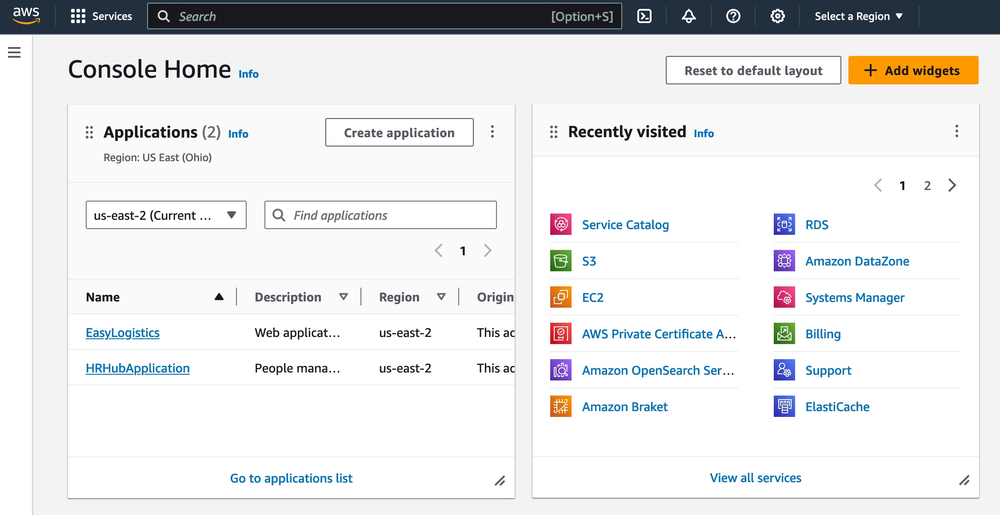
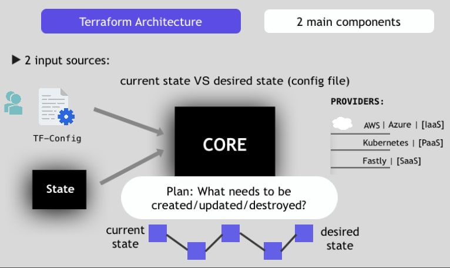
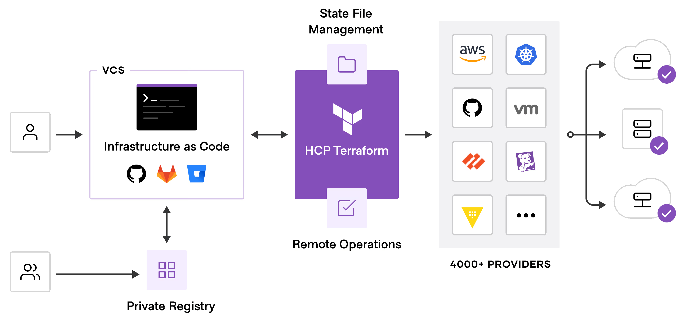

The Problem: Manual Infrastructure

The "Old Way" - Manual processes that don't scale
ClickOps (Manual UI Configuration)
- Clicking through cloud provider dashboards
- No audit trail of who changed what and when
- Difficult to reproduce exactly
Custom Bash/Python Scripts (Imperative)
- Hard to maintain and understand
- Error-prone due to sequential dependencies
- Different scripts for different environments
The Core Problems
❌ Inconsistency between environments
❌ No version control of infrastructure changes
❌ Slow disaster recovery (recreating from memory)
❌ "It works on my machine" equivalent
Introduction to Infrastructure as Code (IaC)
What is IaC?
Managing infrastructure through machine-readable definition files instead of manual processes
Core Benefits
📊 Version Control
Track all changes in Git, see history, collaborate
🔄 Repeatability
Same code = same infrastructure every time
⚡ Automation
Deploy with one command, no manual steps
📚 Documentation
Code IS documentation, always up-to-date
Declarative vs. Imperative IaC
🚗 Imperative (HOW)
"Do this, then do that..."
- Step-by-step instructions
- Focus on process
- Examples: Ansible, bash scripts
# Create VPC
aws ec2 create-vpc
# Create subnet
aws ec2 create-subnet
🎯 Declarative (WHAT)
"I want this end state..."
- Describe desired state
- Terraform figures out how
- Examples: Terraform, Kubernetes
resource "aws_vpc" "main" {
cidr_block = "10.0.0.0/16"
}
⬇️
Declarative is easier to maintain, understand, and automate
Terraform Overview
Key Facts
- Created by HashiCorp
- Open-source (under Business Source License and OpenBao)
- Cloud-agnostic - works with any provider
- Uses HCL (HashiCorp Configuration Language)
Why Terraform Stands Out
🌍 One syntax for everything
Deploy to AWS, Azure, GCP, GitHub, Datadog, Kubernetes... all with the same HCL code
Current Ecosystem
- Terraform Cloud/Enterprise for team collaboration
- Hundreds of providers and modules
- Active community and commercial support
Terraform Architecture

The Three Main Components
📋 Terraform Core
Reads your configuration files and the state file
Builds a dependency graph to understand resource relationships
Plans changes and applies them in the correct order
🔌 Providers
Plugins that talk to cloud APIs
Each cloud/service has its own provider
Examples: aws, azure, google, github, kubernetes, datadog
📦 State File (terraform.tfstate)
JSON file mapping your code to real infrastructure
Terraform's "memory" of what it created
Critical for understanding what's deployed
Why this matters: Same HCL workflow for AWS EC2, GitHub repos, Spotify playlists, Datadog monitors, and more!
HCL Syntax Basics
Core Concepts
- Blocks: Containers for configuration (e.g., resource, variable, output)
- Arguments: Key-value pairs inside blocks (e.g., instance_type = "t2.micro")
- Expressions: Dynamic values (variables, functions, references)
Why HCL is Great
- ✅ Extremely readable and human-friendly
- ✅ JSON-compatible (can also write in JSON if you prefer)
- ✅ Consistent across all Terraform code
Simple Example
resource "aws_instance" "web" {
ami = "ami-0c55b159cbfafe1f0"
instance_type = "t2.micro"
tags = {
Name = "web-server"
}
}
The Big Three Blocks
provider
Tells Terraform who to talk to and how to authenticate
provider "aws" {
region = "us-east-1"
}
resource
The most important block - creating new infrastructure
You define WHAT you want to create (EC2, S3, RDS, etc.)
resource "aws_s3_bucket" "my_bucket" {
bucket = "my-app-bucket"
}
data
Reading existing infrastructure without managing it
Example: Find the latest Ubuntu AMI automatically
data "aws_ami" "ubuntu" {
most_recent = true
filter {
name = "name"
values = ["ubuntu/images/hvm-ssd/ubuntu-*"]
}
}
Making Code Dynamic

variable: Inputizing Your Code
Instead of hardcoding values, accept them as inputs
variable "instance_type" {
type = string
default = "t2.micro"
}
resource "aws_instance" "web" {
instance_type = var.instance_type
}
output: Extracting Data After Deployment
Terraform shows important values after creating infrastructure
output "instance_ip" {
value = aws_instance.web.public_ip
}
Result: One Terraform configuration for dev, staging, AND production with different variables!
The 4-Step Terraform Workflow
1️⃣ terraform init
Downloading providers and initializing the backend
Terraform downloads necessary provider plugins
Sets up local state or connects to remote state
2️⃣ terraform plan
The dry-run - "What will Terraform do?"
Shows + (create) ~ (modify) - (delete) operations
Creates an execution plan
Allows you to review before applying changes
3️⃣ terraform apply
Executing the plan
Terraform provisions all resources in dependency order
Updates the state file with what was created
4️⃣ terraform destroy
Tearing it all down
Deletes all resources Terraform created
Asks of confirmation before destruction
Helpful for cleanup and cost management
The State File (terraform.tfstate)
What is It?
- A JSON file that maps your code to the real world
- Maps
resource "aws_instance" "web" → actual EC2 instance i-0123456789abc
- Terraform's "memory" of what it created
Example State Entry
{
"resources": [
{
"type": "aws_instance",
"name": "web",
"instances": [
{
"attributes": {
"id": "i-0123456789abc",
"public_ip": "54.123.45.67"
}
}
]
}
]
}
⚠️ The Crucial Rule
❌ NEVER commit terraform.tfstate to Git
Why?
• Contains secrets and credentials
• Causes team collaboration conflicts
• Local state only = no team safety
Scaling Terraform
Remote State
☁️ Store state in S3, Azure Storage, or Terraform Cloud
Multiple team members can safely work on the same infrastructure
State locking (via DynamoDB) prevents concurrent modifications
- Everyone reads the same state
- Changes are coordinated
- Audit trail of who did what
Modules
📦 Reusable blocks of Terraform code (like functions in programming)
Write once, use many times across projects
- Avoid repeating code
- Enforce best practices
- Share across teams
- Example: "VPC module" creates VPC + subnets + routing
Remote State + Modules = Enterprise-Ready Terraform
Looking Back: Journey Through Terraform
What we covered
- Part 1: Why manual infrastructure management fails and how IaC solves it
- Part 2: Terraform's cloud-agnostic architecture and key components
- Part 3: HCL syntax and the core blocks (provider, resource, data, variable, output)
- Part 4: The practical workflow: init → plan → apply → destroy
- Part 5: State management and scaling with remote state and modules
Key Concepts
Declarative Approach
Describe the end state, let Terraform figure out how
Version Control
Infrastructure defined in Git, tracked and auditable
Consistency
Same code = identical infrastructure every time
Automation
No manual clicking, full CI/CD integration